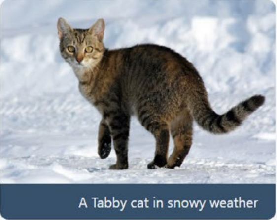
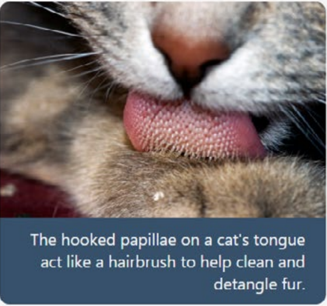

Cat
The cat (Felis Catus) is a small carnivorous mammal. It is the only domesticated
spucies in the family Felidae and often reffered to as the domestic cat to distungushed
it from wild members of the family. The cat is either a house cat, kept as pet, or a feral cat,
freely renging and avoiding human contact[5]. A house cat is valid by humans for companionship and
for its ability to hunt rodents. About 60 cat breeds are recognized by various cat
registries.


Cats are similar in anatomy to the other felid spicies, with a strong flexible body,
quick reflexes, sharp teeth and retractable claws adapted to killing small prey. They are
predators who are most active at dawn and dusk (crepuscular). Cats can hear sounds too faint or
too high in frequence for human ears, such as those made by mice and other small animals.
Compared to humans, they see better in the dark (they see in near total darkness) and have
better sense of smell, but poorer color vision. Cats, despite being solitary hunters, are a
social spicies. Cat communication includes the use of vocalizations including mewing, purring,
trilling, hissing, growling and grunting as well as cat-specific body language[7]. Cats also
communicate by secreting and perceiving pheromones.
Female domestic cats can have kittens from spring to late autumn, with litter
sizes renging from two to five kittens. Domestic cats can be bred and shown as
registered pedigreed cats, a hobby khown as cat fancy. Failure to control the breeding
of pet cats by spraying and neutering, as well as abandonment of pets, has resulted in
large numbers of feral cats worldwide, contributing to the extinction of entire bird species,
and evoking population control.